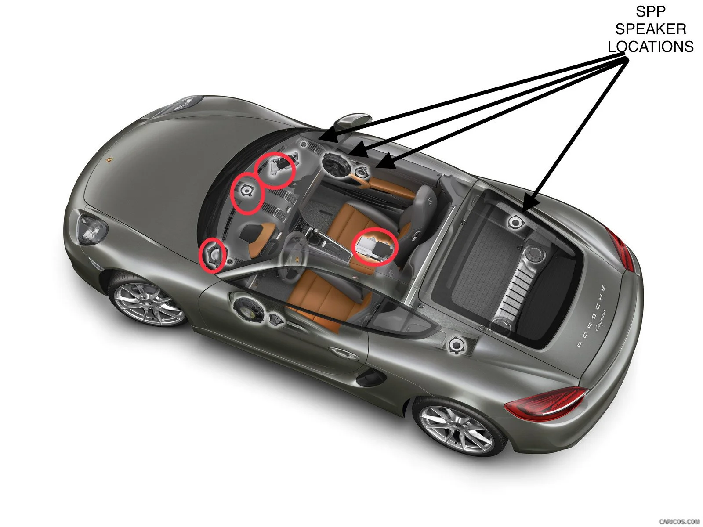
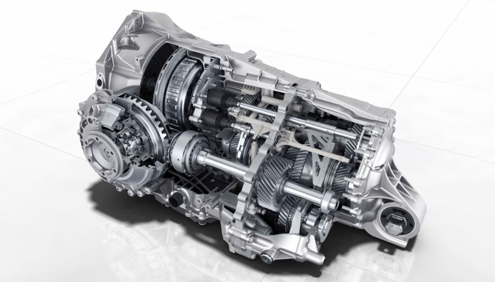

Porsche Connect
Porsche Connect is a set of services from your phone which, when connected to your Porsche with the My Porsche app, allow you to use different tools for remote vehicle tracking, navigation, and infotainment.

Porsche Connect is a set of services from your phone which, when connected to your Porsche with the My Porsche app, allow you to use different tools for remote vehicle tracking, navigation, and infotainment.

Sound Package Plus (SPP) is an upgraded audio system with a collection of around 8 speakers and a total output of roughly 150 watts, producing nice, clean, quality sound for riders.

Doppelkupplung (PDK), roughly translating to "Dual Clutch" is a specialized dual clutched design which acts as two gearboxes inside one automatic transmission, allowing super fast and optimized gear changes.